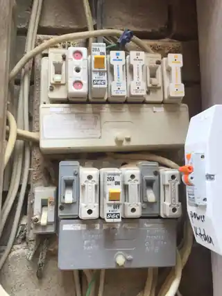
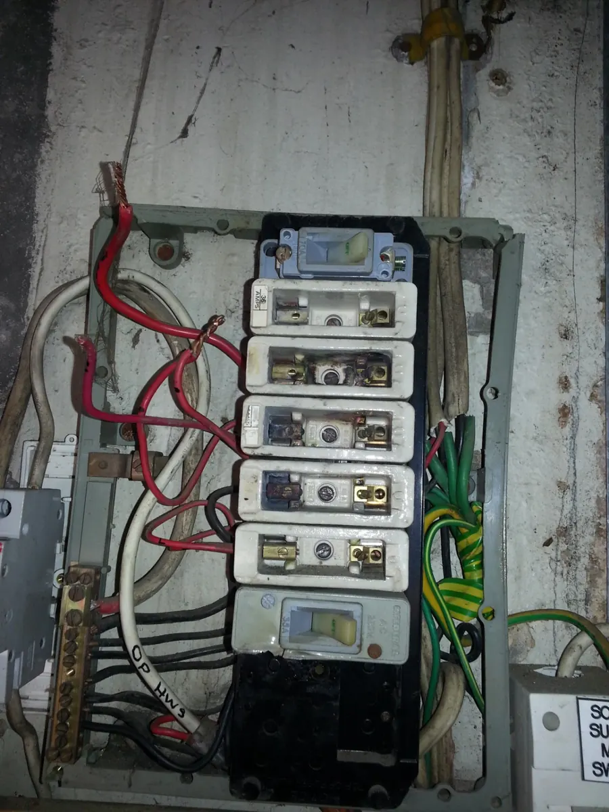
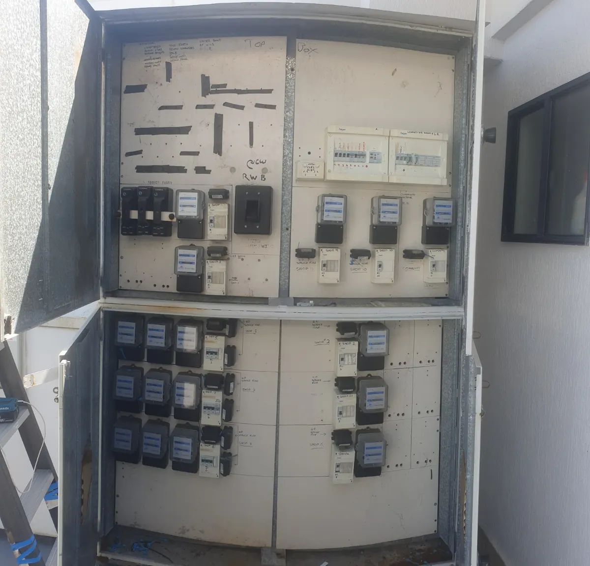
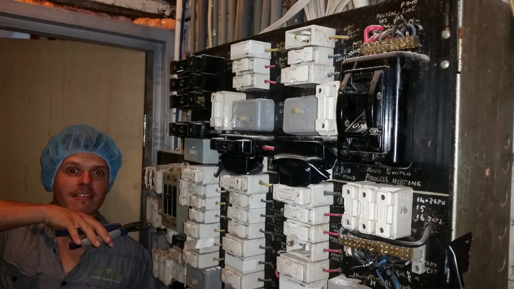

Switchboard Upgrades Byron Bay
Older ceramic fuses, limited safety-switch protection, a crowded board or new electrical loads? Assess what you have before replacing it. Berryman Electrical plans practical switchboard upgrades for Byron Bay and nearby Northern Rivers properties.
Send a safe photo of the board with your suburb and plans for the property. Do not open covers or remove panels for photos.
Does your switchboard need upgrading?
Not every older board needs complete replacement. What matters is its condition, protection, space and suitability for how the property is used today.
Ceramic or porcelain fuses
Older fuse equipment is a good reason to review circuit protection and the condition of the enclosure.
Limited RCD protection
Some older installations lack suitable safety-switch protection for circuits or equipment now in use.
Crowded or altered board
Years of additional circuits and mixed equipment can leave little space or unclear circuit identification.
Heat, damage or deterioration
Scorching, damaged parts, rust, moisture staining or deteriorating components need assessment.
EV charger, air con or renovations
New loads can change the protection, circuit space and supply-capacity requirements.
Coastal weather exposure
Outdoor enclosures around Byron Bay and nearby coastal locations may need checks for water ingress and corrosion.
The right solution depends on the installation.
A switchboard assessment considers the enclosure, protection, number and condition of circuits, wiring connections, labels and planned changes to the property.
An upgrade may involve new circuit protection, a replacement enclosure, clearer organisation or wider electrical work. Replacing everything just because a board is old is not the starting assumption.
Beyond the internal board.
Suspected asbestos backing panels need appropriate handling. Metering, consumer mains, supply capacity or network-side changes may require separate accredited work or coordination.
These items are checked during scoping instead of being assumed part of a straightforward internal board upgrade.
Real switchboard upgrade: before and after.
These photos come from the actual Berryman Electrical work archive. They show an older board with legacy fuse equipment and a completed, organised switchboard. No unverified location, project cost or outcome is attached.


Real work photos, not stock imagery. Your board's required scope is determined by inspection and testing.
From assessment through to testing.
Assess the existing board
Inspect its condition, circuit protection, space, labelling and any new equipment you plan to add.
Agree the scope
Define board work, access, any required isolation and separately coordinated supply or metering work.
Upgrade and organise
Complete the agreed electrical work, fit required protection and keep circuit identification practical.
Test and document
Test the completed work, label circuits and complete applicable NSW compliance documentation.
Will the power be off?
Yes, switchboard work ordinarily requires isolation while electrical work and testing are completed. The outage window is discussed once the board, circuit count and any supply-side work are assessed.
Safety switches and circuit breakers
Protection is selected for the installation and work required. A tripping device is not by itself proof that the whole board must be replaced; the cause may first need fault finding.
What affects switchboard upgrade cost?
A realistic quote follows the actual board, not an invented fixed price. These are the main things that can change the scope.
Number of circuits
How many circuits need protection, whether additions are planned, and what devices are appropriate.
Enclosure and board condition
Size, age, weather exposure, deterioration, backing material and access for safe replacement.
Metering and supply
Potential changes to consumer mains, metering, supply capacity or accredited network-side arrangements.
Related electrical work
EV charging, air conditioning, renovation circuits and the timing or access constraints at the site.
Older boards and electrical equipment vary.
These additional work photographs show why an assessment has to be based on the actual installation. Images are visual context, not diagnoses or claimed Byron Bay case studies.



Switchboard upgrade FAQs.
How do I know if my switchboard needs upgrading?
Porcelain or ceramic fuses, limited safety-switch protection, crowding, visible deterioration, heat damage, corrosion or insufficient room for planned new loads are all reasons to have the board assessed. Age alone does not automatically mean replacement is required.
Do ceramic or porcelain fuses mean I definitely need a new switchboard?
Not automatically from appearance alone. The board, enclosure, protection, wiring condition and planned work should be assessed before deciding whether an upgrade or another solution is appropriate.
How long will the power be off during a switchboard upgrade?
A switchboard upgrade normally requires the electrical supply to be isolated while the work and testing are completed. The likely outage window depends on the board, number of circuits and whether metering or supply-side work is also involved, so it is confirmed when the job is scoped.
Can a switchboard upgrade be planned with an EV charger, air conditioning or renovation?
Yes. New loads are a good reason to assess the existing board, available capacity, protection and circuit space before the new equipment is installed.
What if the old switchboard has an asbestos backing panel?
If asbestos-containing material is suspected or identified, the job should be scoped so the material is managed appropriately before or as part of the electrical work. The approach depends on the condition and extent of the material.
What if the meter, consumer mains or network connection also needs work?
Those items are assessed separately from the internal switchboard work. If accredited network-side or metering work is required, it can be identified during scoping and coordinated with the appropriate provider.
What testing and documentation is completed after the work?
The upgraded circuits and protective devices are tested, the board is labelled clearly, and the applicable NSW electrical compliance documentation is completed for the work where required.
How much does a switchboard upgrade cost?
The cost depends on circuit count, protection, enclosure condition, access and whether any supply-side, metering or asbestos-related work is required. We assess the board and define the actual scope before quoting rather than advertising an unreliable fixed price.
Switchboard upgrades in Byron Bay and nearby towns.
Planned switchboard assessments and upgrades for homes and businesses around Byron Bay and surrounding Northern Rivers locations, subject to job type and availability.
Working on more than the board?
Adding a charger or making changes to a home? Include those plans in the initial request so circuits and protection can be considered together.
Have your switchboard assessed before committing to an upgrade.
Send your suburb, safe photos and what you want to change. We can discuss the likely scope and whether an on-site assessment is needed.
Do not wait for a planned quote.
For sparking, burning smells, significant heat damage or another immediately unsafe electrical situation, move clear and call for urgent assessment. If fire or immediate danger is present, call 000.
Urgent call-out